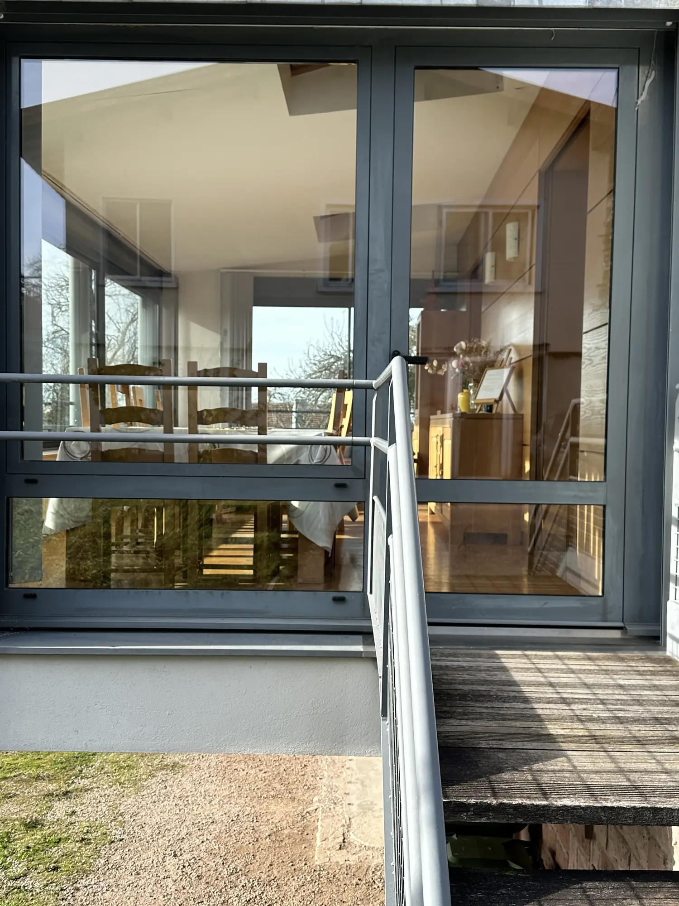
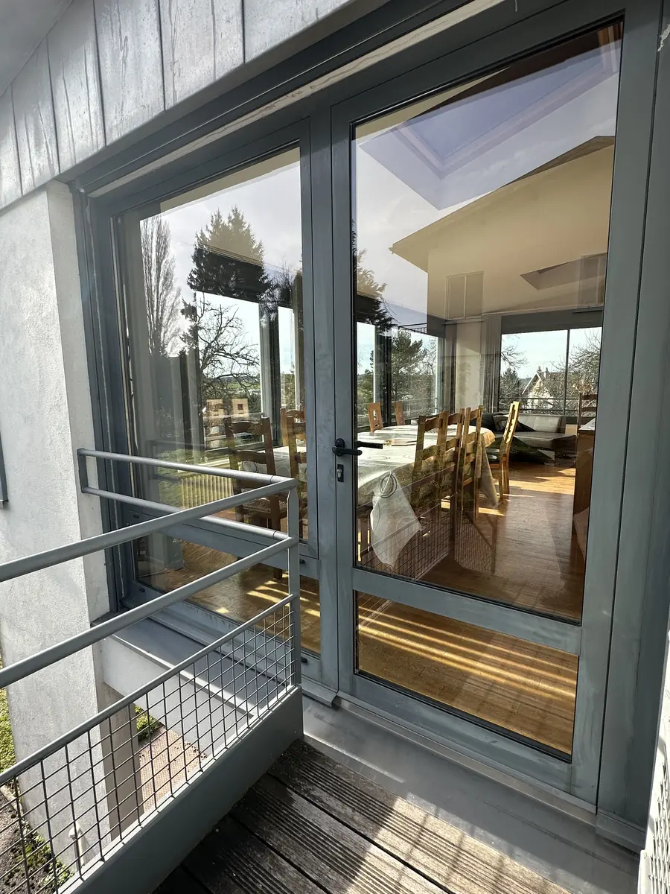
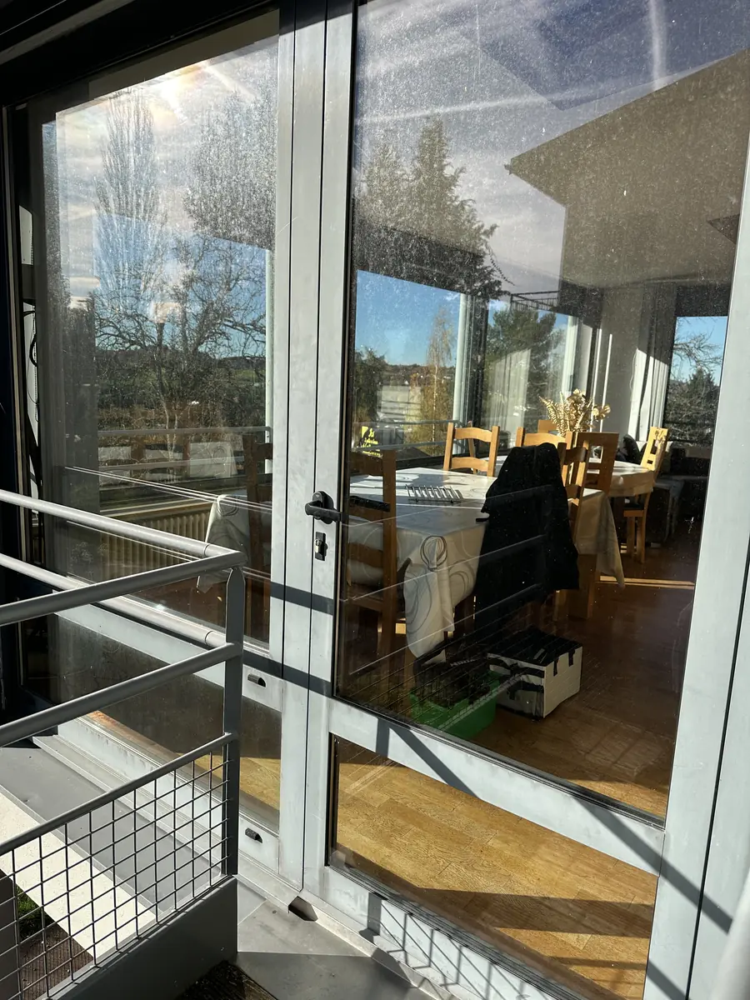
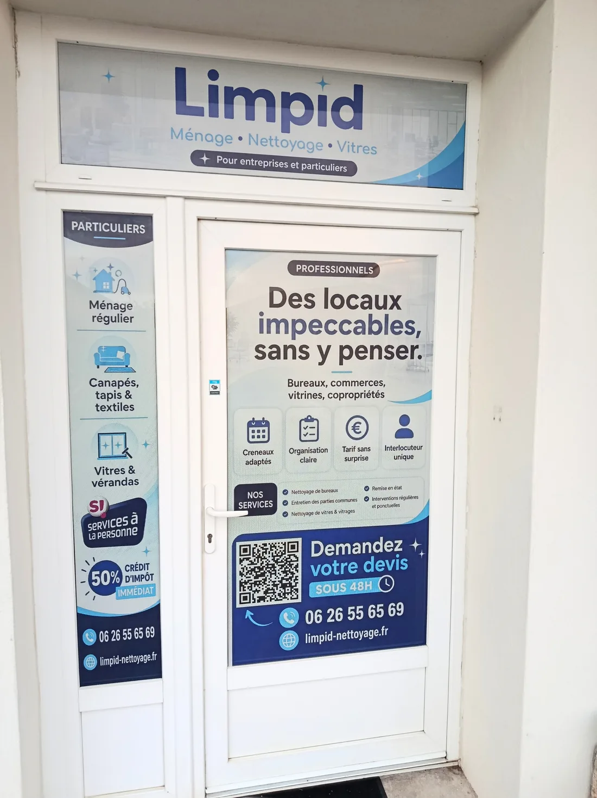

Des créneaux convenus.
Des horaires adaptés à votre activité, décidés avec vous et respectés intervention après intervention.
Des espaces soignés, un suivi sans flou et des engagements concrets. Pour vos locaux professionnels comme pour votre intérieur, Limpid rend la propreté évidente.

De vraies vitrines. De vrais chantiers. De vrais résultats dans les Vosges. Faites glisser le curseur et voyez la différence vous-même.


AVANTAPRÈSLes photographies proviennent des réalisations déjà présentes sur le site Limpid. Une comparaison avant/après ne préjuge pas du résultat de chaque intervention.
Toutes nos réalisations ↗Vos locaux accueillent des collaborateurs, des clients, des visiteurs. Nous adaptons l'entretien à votre activité.
Une entreprise que vous pouvez appeler. Un engagement que vous pouvez relire. Un service qui ne se cache pas derrière une plateforme.
« La régularité ne devrait jamais être une surprise. »Des horaires adaptés à votre activité, décidés avec vous et respectés intervention après intervention.
En cas d'empêchement, vous êtes prévenu et une nouvelle organisation est définie ensemble.
Le devis constitue la référence de facturation. Les interventions non réalisées ne sont pas facturées.
Vous échangez directement avec le gérant, sans plateforme ni succession d'intermédiaires.
Quelques choix suffisent pour rejoindre le configurateur adapté. Aucun engagement, aucune estimation inventée.
Vous pourrez détailler votre demande dans le configurateur déjà en service.
Continuer vers mon configurateur ↗Ce guide sert uniquement à vous orienter. Il n'envoie pas de demande et ne transmet pas encore les choix au configurateur existant. Aucun statut client n'est créé depuis cette démonstration.

Nous croyons que confier l'entretien de ses locaux ne devrait jamais signifier perdre le contrôle. Limpid est une entreprise locale : on sait à qui l'on parle, où la trouver et ce qui est convenu.
Quelques points essentiels avant de nous confier votre projet.
Notre zone habituelle couvre notamment Darnieulles, Épinal, Golbey, Chantraine, Uxegney et les communes proches. Pour d'autres communes ou pour les prestations de vitrerie, contactez-nous : nous vérifierons la faisabilité et les déplacements.
Vous décrivez votre besoin dans le configurateur existant ou par téléphone. Nous étudions ensuite la demande ; une visite peut être nécessaire pour confirmer le périmètre, les accès et le prix. Le devis est gratuit.
Oui, notamment pour les bureaux, commerces et espaces professionnels. Nous pouvons convenir d'une fréquence adaptée au lieu et à ses usages, puis la préciser dans le devis.
Selon les prestations et les conditions légales applicables, certains services à la personne peuvent ouvrir droit à un crédit d'impôt de 50 %. Les modalités, dont l'avance immédiate lorsqu'elle est disponible, sont expliquées dans les pages dédiées.
Le matériel et les produits nécessaires aux prestations convenues sont normalement prévus par Limpid. Les besoins particuliers et conditions d'accès sont précisés lors de l'étude.